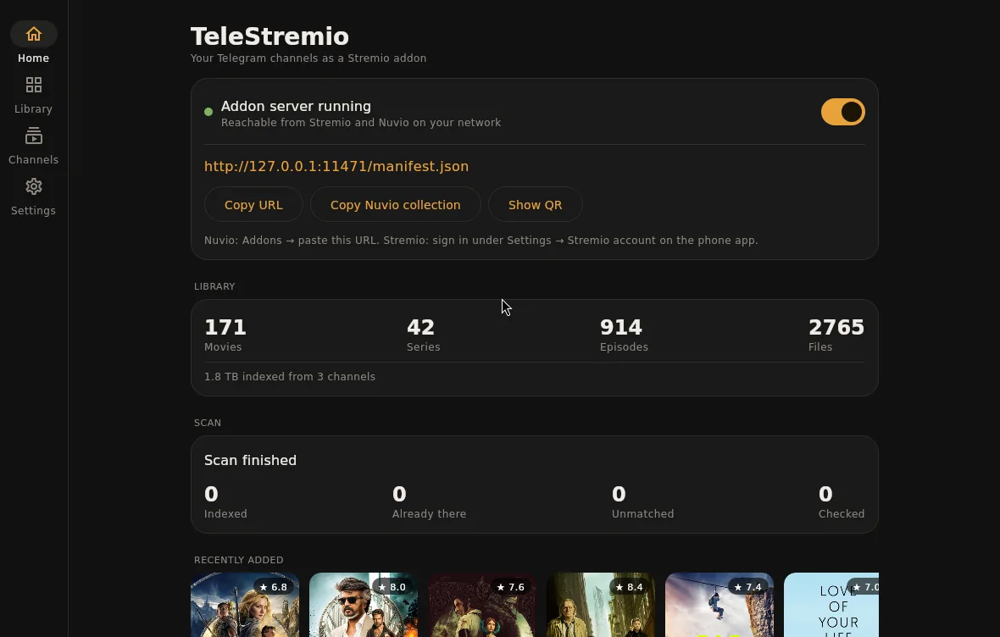
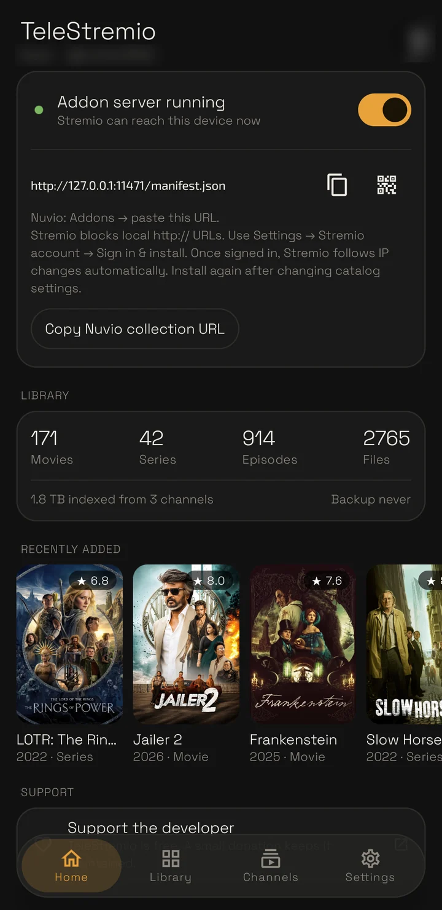

Android
Phones and Android TV, Android 7 or newer. Updates itself.
.apk · arm64, armv7, universal
Get the APKTelegram → Stremio & Nuvio
TeleStremio indexes the movies and series in the channels you follow and serves them as an addon. Press play and it starts while the file is still downloading; seek anywhere and it fetches from there.


How it works
Nothing is uploaded anywhere. The app signs in with your Telegram account and runs the addon on your own device.
Movies, episodes and split archives, posted the way they always are.
Titles, seasons and episodes are matched with TMDB, TVDB, Cinemeta or Kitsu, and new posts are picked up as they arrive.
Add one URL. Catalogs, metadata and streams appear in the apps you already use.
The first bytes and the seek index arrive before you press play, and a seek fetches from the new spot instead of waiting for the whole file.
Trending, Latest Releases and Recently Added, plus Netflix, Prime Video, Bollywood, K-Drama and more, built from what your channels hold.
Discover, Streaming Platforms and Regional folders for Nuvio. Folders with nothing behind them stay hidden.
Pick one of 46 metadata languages. Matching stays in English, and anything not translated falls back to English.
The whole catalog is saved to your Telegram after changes. Reinstall, sign in, restore. A 100,000-file library is a 2 MB backup.
Android phone and TV, Windows, macOS and Linux. On a server with no screen, run it with --headless.
Screens
Ink, Paper and Night: pick one at the top of this page and the screenshots follow.
Download
Free. Each desktop build passes a self-test on its own system before it's released.
Phones and Android TV, Android 7 or newer. Updates itself.
.apk · arm64, armv7, universal
Get the APKWindows 10 and 11, 64-bit.
.msi installer · or a jar
Get the installerApple Silicon (M1 and newer).
.dmg · not notarized yet
Get the disk image64-bit x86. Desktop window, or headless on a server.
.deb · or a jar
Get the packageWindows · PowerShell
irm https://weebzone.github.io/TeleStremio/install.ps1 | iex
macOS & Linux · Terminal
curl -fsSL https://weebzone.github.io/TeleStremio/install.sh | sh
Every file and older versions are on the releases page. New to it? The setup guide walks through the first ten minutes.
Privacy
Before you install
No. Sign in with your phone number. If you'd rather use your own app from my.telegram.org, the sign-in screen takes it.
Stremio blocks plain-http addresses in its install box. Sign in under Settings → Stremio account in the phone app and the addon is added to your Stremio account directly; when your IP changes, the account is updated too. Nuvio takes the URL as it is.
Yes, if you give it an address your other devices can reach: Tailscale, or a domain in front of the device. Set it under Settings → Server → Public host.
Only what you watch, plus a few megabytes when you open a title so it starts fast. Close the player and downloading stops within a few seconds; the cache is trimmed to the limit you set.
They're picked up the next time it opens: each channel scanned before is caught up from where the last scan ended.